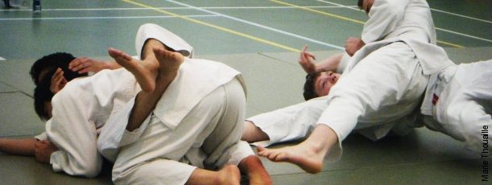
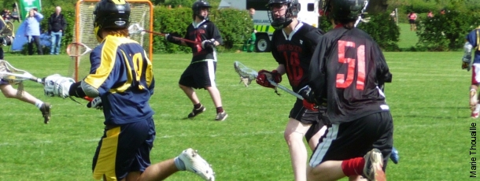

Nick Wright previews this weekend's clash between York City Knights and Hull FC
Alex Reid looks at whether the once ever-present appearance of English clubs in the later stages of the Champions League is set to become a thing of the past
Craig Dobson looks at QPR's decision to sack Neil Warnock and replace him with Mark Hughes
James Tompkinson reviews an excellent pre-season victory for the York City Knights against Yorkshire rivals Leeds Rhinos
03:22  York Win! Tai Chi Mixed
York Win! Tai Chi Mixed
03:22  Lancaster Win! Pool Women's
Lancaster Win! Pool Women's
03:22 York Win! Pool Men's
03:19 York Win! Darts Men's 5-2
03:18 Lancaster Win! Darts Women's 4-5
20:52 Lancaster Win! Swimming Women's
20:52 Draw! Swimming Men's
20:19 Women's Darts: 4-4
19:50 Lancaster Win! Waterpolo Men's 3-6
19:44 Women's Darts update, 3 all to both York and Lancaster. The first to 5 will take the win.
19:13 Lancaster Win! Waterpolo Women's 1-9
18:13 York Win! Netball 1sts 49-22
18:10 Crouch strikes again, the crowd cheers every pass as York assert their dominance.
18:08 "Lancaster's GA is the Alfonso Alves of Netball: she couldn't hit a barn door" reports Sean Martin.
18:07 Netball President, Brunskill injured in the face but is carrying on: like we said, it's a thrilling game.
18:00 York hasn't won at Netball 1st for at least two years: it looks like this year, we're determined to buck the trend! Crouch on top form, York extend their lead.
17:57 York's own version of Peter Crouch comes on at GS. "Wow she is tall," reports Sean Martin, watching Netball 1st.
17:54 Netball update: 36-18 to York at the end of the third quater. York should have this one in the bag with their prolific attack play throughout.
17:50 Netball 1st update: 33-18. John, from Vanbrugh told The Yorker: "the only person with an eye problem is the referee and her Lancaster-tainted glasses aren't helping."
17:47 Netball 1st update: 30-17, Pycroft with another goal.
17:44 Netball 1st: York are on fire, reports Sean Martin, with York in the lead with 28-17: someone call the UN it's a massacre down here.
17:41 GA back up, ready to play, score now up to 23-15 for York.
17:40 The Lancaster goal attack goes down, the fall may be serious. Another correspondant reports that the player has injured her eye.
17:35 21-14 to York at half time. Lancaster have allegedly complained about the noise disruptions caused by York supporters.
17:33 Netball 1st update: 20-14 to York. Half time is approaching with York in the lead.
17:32 In netball, lots of pressure from York, but failing to contest their chances: let's hope it doesn't cost them.
17:28 Netball 1st update: York begins to dominate, Sean Martin, Sports Editor says "I would tell you the score, but it's so fast no one knows."

17:26 In Netball 1sts, York rally after a couple of Lancaster scores, there's a very vociferous crowd here... but the beer may have contributed to that!
17:17 End of first quater for Netball 1st with York leading 10-6, great free flowing netball from teh girls.
17:12 Goals moving fast in Netball 1sts with 8-5 to York.
17:11 Down in Derwent bar, Darts has started and it should go on till about 8:00. Other sports elsewhere include Waterpolo and Swimming down at Archbishop's Holgate. Pool will be starting at 6.00 in Derwent.
17:09 In Netball 1st end to end stuff here for all.
17:04 Netball 1st update: 2-1 to York, it looks set to be a thrilling game.
17:03 Netball has begun: a really good atmosphere here in the tent, and an early basket for York puts them 1-0 up. Lancaster get a quick equaliser 1-1.
17:01 The netball 1st is about to begin, the Lancaster team arrives and are greeted with boos from the crowd.
17:00 Lancaster Win! Volleyball Women's 0-3
17:00 Women's volleyball: 26-25 in third set, Nick Evans comments "it's so tense!"
16:59 York needs one more point to go to the next set in women's volleyball! Come on York!
16:57 Lancaster's women volleyball players only need one more point to win the entire match, but York are doing a good job holding them off.
16:54 Women's volleyball update: 20-18 for Lancaster in the third set.
16:43 Jubilant scenes from the rugby club now: Mike Callis told The Yorker, "It's 5 wins out of 5 and I'm ecstatic. Obviously great fun for us but I think it was good to watch too! I'm over the moon!"
16:38 York Win! Rugby Union Men's 1sts 31-8
16:34 York Win! Tae Kwon Do Mixed
16:34 York Win! Polo Mixed
16:33 Apologies there are still ten minutes left in men's football 3rds - the score stands at 2-1 for Lancaster - however, the same mistake seems to have cropped up in Nouse's liveblog...
16:29 Rugby Union: URY (http://ury.york.ac.uk) interview a player from Lancaster Uni
16:12 York Win! Netball 2nds 27-15
16:09 Interestingly enough, our newly-qualified martial arts correspondant Rachel Basch is disappointed to report that Tae Kwon Do, another demonstration scheduled to take place at 4:00, appears to have been moved or delayed.
16:01 Lancaster Win! Judo Men's Over 90kg
16:01 Draw! Judo Men's Under 90kg
16:01 Lancaster Win! Judo Men's Under 81kg

16:01 York Win! Judo Men's Under 73kg
16:01 York Win! Judo Women's Over 57kg
16:00 York Win! Judo Women's Under 57kg
15:58 With a score of 139-39 for York at the moment and only 96 points left, York has won Roses 2009!
15:56 York Win! Lacrosse Men's 28-0

15:55 Lancaster Win! Hockey Men's 1sts 1-2
15:54 York Win! Rugby Union Women's 1sts 22-17
15:54 Lancaster Win! Football Men's 3rds 1-2
15:44 York Win! Indoor Football Women's 1sts 6-2
15:28 York Win! Fencing Men's 131-112
15:24 York Win! Sailing Mixed 2nds
15:21 York Win! Tennis Men's 1sts
15:13 Rugby Union: URY (http://ury.york.ac.uk) interview a York player
15:05 Draw! Ballroom Dancing Advanced Ballroom
15:05 York Win! Ballroom Dancing Beginners Latin
15:05 York Win! Ballroom Dancing Beginners Ballroom
15:05 York Win! Ballroom Dancing Advanced Latin
15:04 Netball update: York is off to a good start already 2-0 up.
15:00 Netball 2nds have just begun.
14:59 York Win! Tennis Women's 1sts
14:56 Half time has come around for women's rugby with a score of 12-10 for Lancaster, as Lancaster ladies streakers take to the field! Two of them bear a red rose sign!
14:55 In rugby, York is flying forward in attack with great offloading and win a penalty in front of the posts 10 metres out. They decide to run it and score through captain Chrissie Leahy in the left-hand corner. Conversion missed so it's 12-10 to Lancaster.
14:50 Fencing Men's: Wally takes two early blows in his fencing tie. You would have thought his stealth would help him here... apparently not!
14:49 Lancaster Win! Indoor Football Women's 2nds 1-10
14:48 York Win! Squash Women's 1sts 4-0
14:47 Fencing Men's: All of you playing where's wally should come down and watch the fencing as he appears to be warming up for Lancaster.
14:47 In women's 1st Tennis York won one match 6-0, 6-0 and has won doubles as well. It's quite windy which is affecting play significantly. Men's 1st are warming up with a delay.
14:44 Lacrosse update: after first a quater 15-0 to York, Lancaster aren't putting up much of a defence.
14:43 Quote from Jack Butcher, of the York Volleyball team: "The game was excellent, the best performance of our season by a long way. From the first point we had the lead, and we never let them get in sight of the game after that. We won in straight sets with a fantastic team spirit, despite half the team being new and people playing out of position. Everyone's trained really hard and it showed today, it really paid off. The crowd were bloody awesome, they helped the momentum and helped us to keep going." Sami, from James, an avid Volleyball fan told The Yorker: "Chipman floated above the Lancaster defence leaving them looking like mugged whales."
14:41 York Win! Snooker Mixed
14:40 Another squash match won by York!
14:40 In Rugby, Lancaster have scored again through their pacey number 11, this time right in the left-hand corner. No conversion though so it's 12-5 to Lancaster with half-time fast approaching.

14:38 And it just keeps getting worse in women's indoor football with 6-0 for Lancaster.
14:37 In Men's 1st Hockey Lancaster score in the first few minutes with goal in top left corner making it 1-0 for the red rose.
14:36 Indoor football has just started again with another goal by Lancaster: 5-0, this is beginning to hurt!
14:34 Women's 2nd indoor football is now hitting half time with Lancaster still in the lead with 4-0.
14:33 The crowd is revived by some warm up lunging by the netball 2nds. Wow that's stretchy lycra!
14:32 On the rugby pitch, York are still defending solidly, putting phases together in attack. Still deadlocked play in the loose.
14:31 Squash Women's 1st: first out of five games won by York
14:27 Women's 2nd indoor football update: 4-0 for Lancaster.
14:25 Squash update: York has won two matches so far.
14:25 Men's 1st fencing update: 30-26 for York, the scores go up to 45 so it's nearly over!
14:23 Bay watch is on which means a York victory and lots of screeching. Well done netball 3rds.
14:23 Women's 2nd Indoor football score 1-0 for Lancaster.
14:22 Draw! Hockey Women's 1sts 0-0
14:21 On 22 acre, the water balloon catapult is back giving the Lancaster pack a drenching. Kirsty Wheeler tighthead prop scores in the corner for York to make it 7-5 for Lancaster.
14:20 York Win! Netball 3rds 51-23
14:19 York Win! Volleyball Men's 3-0
14:19 Netball 3rds final score is 51-23 for York.
14:18 In the third set for men's volleyball tension is mounting with a score of 24-13.
14:16 In women's 1st squash York has won the first game.
14:14 In Ladies 1st hockey, a Lancaster player just got a yellow card and got sent off.
14:14 Lancaster try through left winger. outsprinted everyone and went over and under the posts. Conversion slotted making it 7-0 to Lancaster after five minutes in Women's 1st Rugby Union.
14:13 Packed house in the tent as York's supporters revel in the Netball 3rds dominance.
14:10 York is leading in the third set 14-7 in Volleyball men's.
14:05 women's rugby 1st: York injury after less than a minute to lock Lizzie Prance
14:00 Volleyball men's win the second set 25-17. Loud cheering from crowd.
13:56
13:55 Sill 0-0 in the women's hockey. Some very smelly banter from the Lancaster hockey boys.
13:53 Netball 3rds: end of 3rd quarter 37-18 for York
13:52 Indoor football has just finished: Shultz and Hyde with great late goals. Udy hailed as the man of the match.
13:51 York Win! Indoor Football Men's 1sts 8-3
13:47 Men's 1st indoor football: 7-3 to York. Game is still going on.
13:45 In Volleyball, York is leading 6-3 in the second set.
13:41
13:41 Hockey ladies 1st: 0-0 at half time.
13:41 Men's 1st indoor football: 4-3 to York. Game is still going on.
13:36 In women's 1st Hockey a Lancaster player gets shown a green card. Hockey uses a three-tier penalty card system of warnings and suspensions, with the green card being a warning, followed by a yellow card which means a temporary suspension and finally a red card which is a permanent exclusion.
13:36 Former YUSU AU president Tom Moore and former YUSU President Anne-Marie Canning were just here watching the men's volleyball. Canning told The Yorker of Roses: "I think it's going really well but really I'm here for the social as well as the sporting activities."
13:35 In Netball 3rds are hitting half time with a score of 25-14.
13:32 York Win! Rugby Union Men's 2nds 32-3
13:29 In Rugby, York is still in control, gunning for more points ad the final whistle blows, 32-3 for York.
13:23 Rugby: Tilney is injured by corner flag while trying to score in the right-hand corner. York steal line-out and score after scrum through Johnston. Conversion makes it 32-3 to York! The game is won now!
13:22 Volleyball 1st men has just begun and the first point went to York, it looks like a good game and the crowd is enthusiastic.
13:21 Lancaster Win! Trampolining Novice Intermediate & Advanced 145.3-147.3
13:20 Netball 3rds 15-4 at the end of the first quater.
13:18 In tennis, women's 1sts have just begun, Lancaster claim to be optimistic but look glum.
13:17 At dancesport the 1st round of ballroom is done. York are doing awesome. Lancaster have just been tangoed. Latin starts at 1.30. lets see some chest hair!
13:15 York Win! Tennis Men's 2nds
13:15 Rugby: Lancaster lock has started punching his opposite number club president James Smallwood and has paid the price with a yellow card.
13:14 Rugby: Fantastic individual breakaway from winger Sebastian Hurst. Converted his own try to make it 25-3 York
13:11 In the main hall, Volleyball players are warming up with their match starting at 1.15pm.
13:10 In sailing after the 1sts mixed's victory, the 2nds are still racing, on course to win.
13:09 York Win! Sailing Mixed 1sts
13:08 Lancaster Win! Indoor Football Men's 2nds 3-4
13:08 Trampolining final scores: 145.3-147.3 for Lancaster: an honourable finish given York was extremely disadvantaged by the lack of competitors.
13:06 York Win! Hockey Men's 2nds 2-1
13:05 Rugby men's 2nds update: York restart well attacking as in the first half. Though Lancaster have been pressuring well, York are calmly soaking up everything thrown at them.
13:02 Lancaster Win! Rowing Women's Senior 8
12:59 York Win! Rowing Men's Senior 8
12:58 In dancesport, the first round is now complete: beginners and advanced waltzes: York is looking good!
12:55 Indoor football 2nds update: 2-2.
12:55 York Win! Fencing Men's 2nds
12:54 York has just won Hockey men's 2nds 2-1.
12:54 In fencing, women's and men's 2nd have finished, York winning women foil and saber but not épee; men winning foil and épee but not saber. Men's 1st has just begun.
12:52 York Win! Fencing Women's
12:49 Beautiful defence of Lancaster short corner for the second time today by James Evans in men's 2nd hockey.
12:49 Rugby is now hitting half time with a score of 18-3. Although York is dominant they need to keep their heads in the game and not think they've already won the game.
12:48 York 2nds on men's indoor football, leading 1-0.
12:47 York score a stunning try through the pace of Des Pollen. Hirst unsurprisingly misses the conversion from a very wide angle with lots of wind. 18-3 with half-time fast approaching.
12:46 Lancaster has just scored in Men's 2nds Hockey: 2-1 to York.
12:43 Lancaster Win! Indoor Football Men's 3rds 3-7
12:41 On the rugby pitch, York appears too sloppy from the restart and are under the cosh but resist the pressure. Lancaster didn't deserve to score a try playing such ugly rugby, reports our correspondant.
12:37 On 22 acre: York penalty left hand slide 10m from the try line. Keep pressure up an from line out on the right go over under the posts through centre Jack Miles. Hirst converts for 13-3.
12:35 Indoor football men's 3rds update: 7-3 to Lancaster, the game is getting aggressive!
12:34 On 22 acres, our correspondants report that the foam hats are back, someone appears to have brought a pot as a percussionary complement to the chanting: great atmosphere.
12:25 Rugby update: York have majority possession and pressuring, keeping it in the Lancaster half. ANother penalty, in front of the posts this time, nailed by winger Hirst. 6-3 for York.
12:23 Indoor football update: 4-1 for Lancaster at half time.
12:22 Lancaster has won by 19 points in saber for Men's fencing, however there are still eleven fight left.
12:17 Men's 2nds Hockey score was 2-0 at half time.
12:17 Final scores for Women's fencing are 40-39 for foil, 45-38 for saber. Men's foil 45-28, only saber to go.
12:15 In Derwent, our dancesport correspondant reports that the competition ought to be starting soon: only the judges are missing.
12:13 Rugby update: York concede penalty as well and the Lancaster fullback pulls it back to 3-3.
12:13 Updated score in indoor football: 1-1.
12:12 Men's indoor football 3rds kicked off and 1-0 to york already.
12:12 Lancaster kick off and York (wearing shiny new kits) settle into a rhythmvery quickly. Two good early breaks by winger Tilney pile on the pressure. Hirst kicks a penalty: 3-0 to York.
12:07 Trampolining update, in the intermediate session, York had no contestants: the top three are therefore all from Lancaster: Walker with 43.2, Foster with 42.8, Stoaks with 42.5. One of the Lancaster contestants (Lead) fell and hurt her knee and has therefore opted out.
12:02 From 22 acre, our Rugby correspondant reports that there are high winds again but no rain in sight. In fact, the Lancaster fans are all wearing sombreros! Firts up looks like Men's rugby Union 2nd XVs, not the Women's 1st as billed because there are no female players in sight! Kick-off very soon.
11:56 Tennis scores for Men's doubles so far 8-0, 8-3, 8-6 respectively.
11:55 Think you know how the Roses weekend is going to turn out? Then enter The Yorker's competition here and you'll be in with a chance of winning one of three sets of five student part passes for Tru this Tuesday!
11:52 Men's hockey update, score is now 2-0, both from short corners.
11:45 Men's Hockey update: York has scored! 1-0 for York.
11:42 York Win! Rowing Men's Novice 8
11:37 Men's 2nd Hockey has started now, followed by our correspondant Hannah "Hockey-lover" McCarthy.
11:36 In Trampolining, the intermediate contestants have hit the half-way mark. The top scores for the novices are 45.1 for Lancaster with Wood, and 43.2 and 41.0 for York with Linderman and Nutter respectively. The intermediate isn't looking good for York as we have very few contestants. However, only the top three score will count for the final score.
11:31 York appears to be in the lead in Tennis, having the first set in two separate matches.
11:28 York Win! Rowing Women's Novice 8
11:24 Though York has lost 1-0 in Women's hockey, goalie Claire Kirby is reported to have played a great game.
11:23 In Tennis men's 2nds, Steve McNichol and George Beaumont are doing well 8-3 in their double.
11:22 Lancaster Win! Hockey Women's 2nds 0-1
11:15 York Win! Rowing Men's Senior 4
11:11 In fencing, the scores are as follows, 5-3 to York for women, and 35-31 to York for men. There are only two remaining fights for men. Suspense.
11:09 Alright, does anyone know the rules of Trampolining? Our correspondant has handed us a list of scores, which to the un(trampolining)trained eye mean, well, next to nothing.
11:05 Don't forget that you can also check out our live coverage on our Twitter account.
11:03 Apparently the stroke is now awake, and is reported to be eating bananas - rich in potassium (K) - she will probably race in Women's senior 8s.
10:59 Our rowing correspondant, Antonia Moura reports that Lancaster's women's senior 4s' stroke has just collapsed: she appears to have pushed herself too hard. For those who are unfamiliar with Rowing-speak, the stroke is the one who sits at the front of the boat. We'll keep you posted.
10:54 In other news, after a predictable sandwich-shortage in Your:Shop and Costcutter, your loving Yorker Editor was agreeably surprised to find that Vanbrugh provided an array of breakfast butties, milk glasses and cereals. So if you can't wait for lunch you know what to do!
10:54 Read The Yorker's round-up of events from the first day of the Roses weekend right here.
10:52 Lancaster Win! Rowing Men's Freshers 4
10:52 York Win! Rowing Women's Freshers 4
10:48 In Rowing, Men's Freshers 4s are up next although they were meant to come before the women's seniors, there seems to have been a problem.
10:47 Men's Fencing: 16-11 for York.
10:46 Lancaster Win! Rowing Women's Senior 4
10:45 In Rowing, women's senior 4s are up next: the Lancaster women are known as the "super fours" so it's not looking good.
10:44 Our Tennis correspondants are surprised by the numner of matches occuring simultaneously... but York seems to be doing well on court 3 with 8-0 for York!
10:42 In Women's 2nd Hockey the score is 0-0 at half time, with York pushing in the last half of the first half. In town the womens freshers 4s have won, but this brings no point to the competition.
10:40 Alright folks, here's an overview of what is going on right now: we have women's 2nd Hockey, Men's 2nd Tennis, Fencing and Trampolining as well as Rowing in town. A lot of points up for grabs!
10:39 York have just won the rowing women's freshers fours. The race wasn't worth any points but adds another win to our every growing list.
10:25 York Win! Rowing Women's Novice 4
10:25 York Win! Rowing Men's Novice 4


You must log in to submit a comment.
{kind=link}
{kind=link}
{kind=link}
{kind=link}
{kind=link}
{kind=link}
{kind=link}
{kind=link}
{kind=link}
{kind=link}
{kind=link}
{kind=link}
{kind=link}
{kind=link}
{kind=link}
{kind=link}